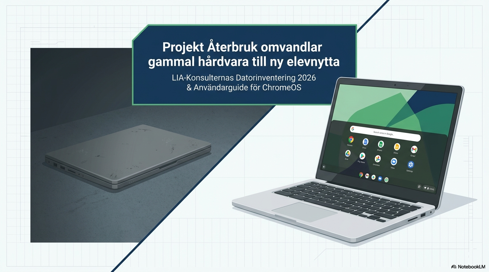
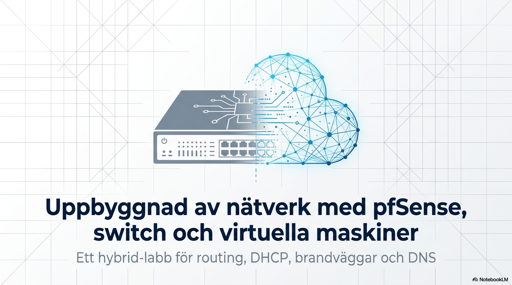

LIA-PROJEKT · 2026
Återbruk omvandlar gammal hårdvara till ny elevnytta
Datorinventering och användarguide för ChromeOS – ett projekt där befintlig hårdvara får ett nytt och användbart liv.
Visa projekt ↗UTVALDA ARBETEN
Här presenterar jag projekt från min utbildning. De visar hur jag omsätter tekniska kunskaper i praktiken, individuellt och tillsammans med andra.

LIA-PROJEKT · 2026
Datorinventering och användarguide för ChromeOS – ett projekt där befintlig hårdvara får ett nytt och användbart liv.
Visa projekt ↗
PROJEKTARBETE 20 YHP · 2026
Ett fungerande fysiskt och virtuellt nätverk med routing, DHCP, DNS override, brandvägg, SSH och en Ubuntu-webbserver.
Visa projekt ↗LÄRANDE I PRAKTIKEN
Välj en markerad cell för att se hur kompetensen demonstreras i respektive projekt.
| Demonstrerad kompetens | Återbruk | pfSense Hybrid Lab |
|---|---|---|
| Planering & genomförande | ||
| Teknisk konfiguration | ||
| Felsökning | ||
| Test & verifiering | ||
| Dokumentation & kommunikation |
Välj en cell i matrisen.